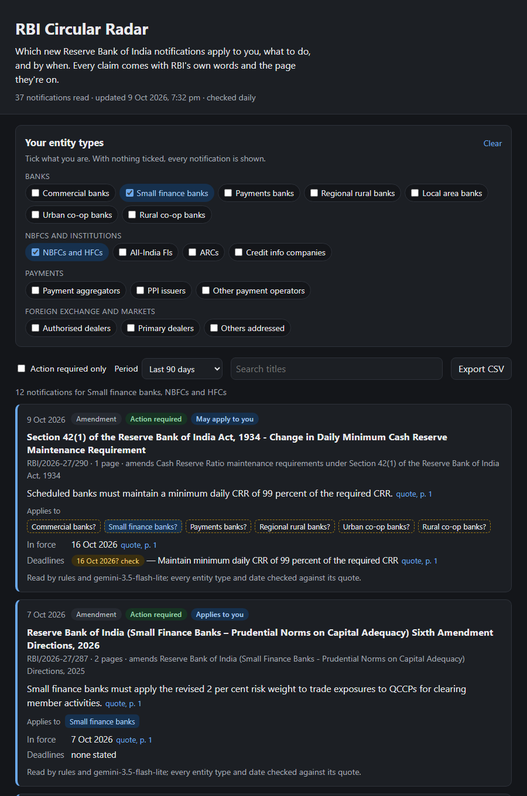
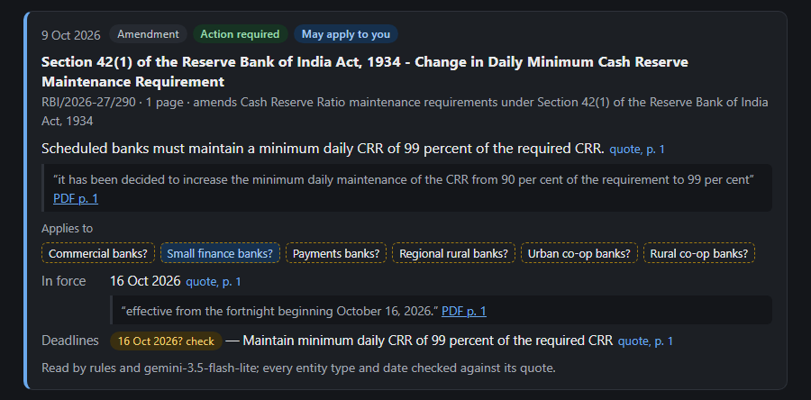

Case study · Personal project · Oct 2026
RBI Circular Radar
Which new RBI rules apply to you, what to do, and by when. A live digest for compliance teams, with RBI's own words and page behind every claim.
Akshay Dhar · akshaykumardhar14@gmail.com · github.com/AKSHAYKUMARDHAR/RBI-Circular-Radar
The problem
RBI issued 376 notifications between 1 April and 7 October 2026, about 15 a week. In November 2025 it consolidated about 9,000 circulars into 244 Master Directions, one set per type of regulated entity. So a single change now often arrives as several near-identical "Amendment Directions": on 7 October one capital-adequacy change came as four documents, for four entity types. The daily question for a compliance team ("does this one apply to us, what must we do, by when?") has become a filtering problem.
Missing one costs money and trust. RBI fined a payment aggregator, Cashfree Payments, ₹3.10 lakh in March 2026 for not complying with its payment aggregator directions. Its January 2024 circular asks banks and larger NBFCs to run compliance monitoring on technology, yet vendors still describe updates "pushed via excels".
Who it's for
- The compliance manager at a fintech (payment aggregator, PPI issuer, NBFC lender) who has to tell product and tech every morning what changed for their licences.
- The compliance team at a small bank (urban co-operative, small finance, regional rural) without a regulatory-intelligence subscription.
- The head of compliance who needs to show that nothing applicable was missed.
What I built
A free live digest. Every 10 minutes a GitHub Actions job checks RBI for new notifications, and reads each one as it appears. For each one it says which of 17 entity types it applies to: seven kinds of bank, NBFCs, all-India financial institutions, ARCs, credit information companies, payment aggregators, PPI issuers, other payment operators, authorised dealers, primary dealers and others. It also gives the kind of notice, whether action is required, and the dates that matter: in force from, deadlines, comments due. Each claim opens to the exact quote and links to that page of RBI's PDF. Tick your entity types once, filter to "action required" and export to CSV for your tracker.


Product decisions
- Recall first. A compliance team can skim one extra notice; it can't afford to miss one that applies. So the release gate was zero missed (notification, entity type) pairs, with precision only needing 85%.
- Rules where RBI's format is reliable, the model for the rest. Since the 2025 consolidation, directions name their entity type in the title, and circulars carry an addressee line. Rules read those for free; one Gemini read covers the rest: the action, the deadlines, who else is affected.
- The model reads; code checks. A claim is shown as fact only when its quote is on the cited page and supports it. An entity's quote must name that entity type, and a date's quote must contain the date and say what it's for, so the letterhead date can't pass as a commencement date. Anything else says "check the document".
- Built around fintech licences. Payment aggregators, PPI issuers and payment operators are first-class types, and a notice to "Payment System Providers" maps to all three.
- No server. A static site, republished only when RBI publishes something, costs nothing to run and can't leak anything. A check with nothing new uses no model request, so the free tier covers RBI's volume (about 15 notices a week).
- Not advice. It points you to the notice and the page; you read it before acting.
How I tested it
I crawled all 376 notifications from April to October 2026 and drew 50 at random, stratified by kind, with a fixed seed, before writing any prompt or label. The draw contained no payment-system notification, yet those are the fintech licences the product is pitched at. So I added the other 10 by a written rule (everything from RBI's payments department, or titled "digital payment", "payment system" or "non-bank entities") and report them separately. Then I wrote the answer keys by hand: for each notification, its entity types, kind, action and dates, each with the exact quote and page, under a label guide written first. A script checks every quote against the PDF.
Scoring is per (notification, entity type) pair, and dates are correct, wrong or withheld. Every version is scored from the same model answers, so each layer's value is measured:
| Development, 25 notifications | Missed pairs (of 62) | Precision | Dates wrong (of 75) |
|---|---|---|---|
| Rules only | 0 | 100% | 6 |
| Model only (gemini-3.5-flash-lite) | 1 | 100% | 5 |
| Model + code checks | 2 | 100% | 1 |
| Rules + checked model · frozen | 0 | 100% | 0 |
A second model read per notification changed nothing in the merged result, so one read ships. The bigger gemini-3.5-flash wasn't needed: its free tier allows 20 requests a day, and the PRD rule was that the cheaper model ships if it passes.
| Release runs, frozen system, run once | Missed pairs | Precision | Dates correct / wrong / withheld |
|---|---|---|---|
| Run 1 · 35 held-out notifications | 2 of 59 | 95.0% | 99 / 0 / 6 |
| Run 2 · 20 freshly drawn notifications | 1 of 51 | 100% | 51 / 1 / 8 |
Release gate
- Run 1, no applicable pair missed: 2 missed
- Run 2, no applicable pair missed: 1 missed
- Precision ≥ 85%: 95.0% and 100%
- Wrong dates ≤ 2%: 0 of 105 and 1 of 60
- Correct dates ≥ 85%: 94% and 85.0%
- Every claim shown is quoted and found on its cited page: all of them
What failed, and what's next
The third miss was real: an outward-remittance framework placed duties on non-bank platforms only in its annex, and neither the rules nor the model listed them. After run 1, I fixed what it exposed and tested the fixes on development only. Then I drew 20 fresh notifications, labelled them and ran once. Run 2 failed by one pair, the same way.
The date checks did their job. On its own the model got 11 of 165 held-out dates wrong, all the same way: where a notice says nothing about when it takes effect, it gave the date printed at the top, even though the prompt says not to. The check that a date's quote must say what the date is for caught all 11. After the checks, 1 date was wrong, and it came from the rules: a scheme "effective from April 1, 2013", mentioned in background text.
The rules flattered themselves. They caught every development pair, but missed 6 of 59 on the first held-out set, because I had written them after reading the development documents. On unseen notifications the model carried recall, not the rules.
What ships now changes one thing: an entity type the model names but the check can't confirm is shown as "may apply: check" instead of being dropped. Re-scored on the same cached answers, that misses 1 pair in 110, with no wrong dates. It was decided after seeing the failures, so it isn't a pass. The first live notice showed why it matters: on 9 October RBI wrote to "All Scheduled Banks", another phrase the check doesn't know, and the old merge would have dropped all six bank types.
Next: label a sample of live notices each week as the new held-out test; grow the entity phrases from live misses, and from the "check" badges users confirm; and put the digest in front of compliance teams at a payment aggregator, a PPI issuer and an NBFC to learn which alerts they act on. After that, email and Slack alerts, NPCI and SEBI circulars, and a second labeller.
What I learned
- A check built to stop false claims can quietly cost recall. In a recall-first product, a check should downgrade a claim to "check", never delete it.
- Rules written by the person who wrote the answer key overfit the documents that person read. Only unseen documents tell you what the rules are worth.
- Random samples can miss the users you're building for. The stratified draw had no payment notices at all; a written, separately reported supplement fixed that without pretending it was random.
- A failed gate is a result. Both runs are logged with their errors, held-out labels were never edited, and the post-hoc numbers are labelled as post-hoc.
All 80 notifications are RBI's own public documents, pinned by hash; the answer keys are mine, written before any model read them. Every number comes from a logged run in the repo.